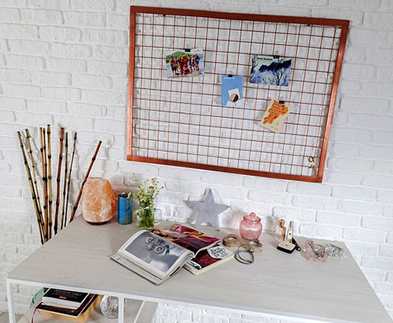

Первое, что стоит отметить, — качество мебели. Например, действительно качественная фурнитура мебели прослужит вам много лет. Следовательно, при покупке важно обратить внимание на крепления. Они должны быть прочными и надежными. Также важно обратить внимание на материал мебельных изделий, который должен быть влагоустойчивым и крепким. Лучше один раз потратить средства на более качественную мебель из стали и дерева, которая не подведет и будет выглядеть новой много лет, чем постоянно о ней беспокоиться и ремонтировать. Однако не стоит на сто процентов быть уверенным, что дорого значит качественно, так как цена может быть завышена, а качество — занижено.
Некоторые практические советы по выбору качественной мебели
Одно из качеств хорошей мебели — это надежность при транспортировке. Может быть, что офис переезжает, и поэтому важно, чтобы мебель была мобильной. Не стоит устанавливать в офисе громоздких шкафов до потолка. Такую мебель тяжело разбирать, хранить, транспортировать и заново устанавливать. Помимо эстетичного вида, мебель должна быть функциональной, а именно быть подходящей и удобной для хранения документов или других нужных вещей. Более того, правильная установка и порядок в мебели будет служить хорошей обстановкой для работы сотрудников. Например, если ваша мебель обладает большим количеством мест для хранения документов, то это поможет хорошо их отсортировать, что, в свою очередь, увеличит работоспособность сотрудников офиса.
Кабинет руководителя — это важная часть внешнего вида вашего бизнеса. Эта часть офиса должна быть максимально солидной, а значит, и мебель в ней должна быть достаточно дорогостоящая. К примеру, это будет благородный деревянный стол. В этом кабинете мебель должна отличаться от остальных помещений. А в других кабинетах достаточно иметь качественную мебель из стали и дерева. В залах ожидания или других помещениях с посетителями нужны комфортные кресла или диванчики. Они должны быть уютными, и тогда посетителям будет приятнее обращаться в ваш офис.
Также нужно оборудовать места для посетителей на случай того, что поток приходящих людей будет больше. И при этом такая ситуация не должна никого напрягать или вызывать дискомфорта. Тут необходимо уделить особое внимание материалам мебели, так как ею будут пользоваться активнее обычного. При этом она должна сохранять красивый и солидный вид. Тут нужны материалы, которые можно без затруднения почистить или отремонтировать.Залы для конференций или любые другие места для сборов не стоит загромождать мебелью. Лучше всего в этом случае следовать принципу минимализма. Например, это будет несколько столов для презентаций или досок, стол и нужное количество стульев. Сам стол лучше всего длинный, круглый или овальный, со стеклянным или другим глянцевым покрытием. А стулья лучше всего подбирать в тон стола. Темные цвета в мебели будут настраивать психологически на серьезность мероприятия, а глянец придаст яркости. К тому же, это будет не заурядно, что придаст имиджа вашему офису и всей компании.
Позитивная атмосфера
В офисе мебель из стали и дерева может создать максимальную положительную и комфортную для работы атмосферу. Если будут присутствовать яркие и пестрые цвета, то это будет отвлекающим фактором для сотрудников и, как следствие, вызовет несконцентрированность на работе. А, наоборот, спокойные тона будут создавать приятную атмосферу. На эмоциональном уровне у работников будет складываться приятная для работы атмосфера. Например, такие оттенки, как светло-зеленый, горчичный, коричневый или другие светлые и спокойные тона, будут помогать сотрудникам настраиваться на рабочий лад. Это поможет избежать переутомлений, будет здоровая атмосфера, и, конечно, работоспособность коллектива будет высокой.
Будет презентабельно, если в цвета мебели органично встроить цвета вашей компании. Также это будет дополнительным рекламным посланием вашим клиентам. Более того, намного успешнее будет сделка, если ее совершать в уютном и хорошо продуманном кабинете. Если это важная сделка, то наверняка уютная обстановка сыграет ключевую роль в итоге соглашения.
Выбор офисной мебели — это творческий процесс. Тут у каждого есть возможность самореализоваться. Когда идет процесс создания хорошего и уютного рабочего места, то у вас рождаются свои идеи. В таком случае творческая и созидательная атмосфера обязательно увеличит плодотворность и эффективность вашего труда.
мебель из стали и дерева в Алматы
Источник: eral-office.ru